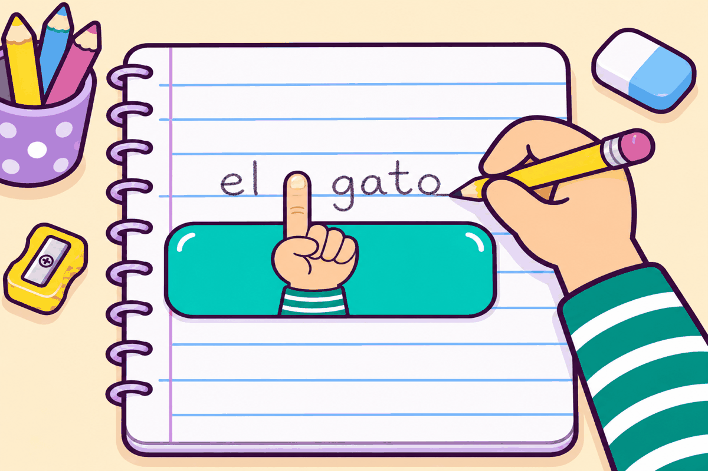
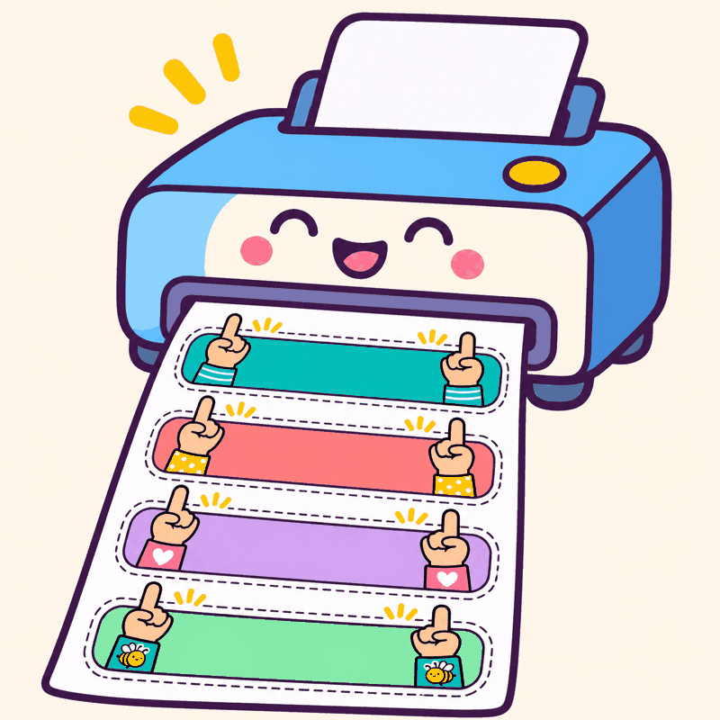
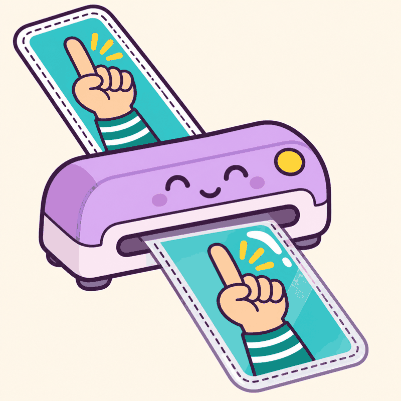

Separador de palabras
El dedo de la tira marca el hueco entre palabra y palabra.

- Escribe una palabra.
- Pon el dedo justo al final.
- Escribe la siguiente al otro lado.
Salen 6 tiras en un folio. Imprime al 100 %, recorta por los puntos y plastifica.
Si no se abre, abre el enlace en Chrome o Safari (no dentro de WhatsApp).
🎨 Más opciones de la tira
▶️ Verlo paso a paso
Así se usa la tira.
🎮 Pruébalo en la pantalla: ¿dónde va el hueco?
Las palabras se han quedado pegadas. Toca entre las letras donde acaba cada palabra.
✏️ Hoja de práctica y diploma
Hoja de práctica: cada frase sale con deditos entre las palabras y dos renglones para copiarla dejando el hueco. Una frase por línea.
Diploma: para cuando ya deja el hueco solo. Sale con su nombre y el color elegido.
🖨️ Imprimir, recortar y plastificar


- Imprime al tamaño real (100 %), mejor en cartulina. Así la regla mide centímetros de verdad. También vale «Guardar como PDF» y llevarlo a la copistería.
- Recorta por la línea de puntos, dejando el borde blanco alrededor del dedo.
- Plastifica y vuelve a recortar dejando 2-3 mm de plástico. Sin plastificadora: cinta adhesiva ancha por las dos caras.
- A escribir. Una tira para casa y otra para clase. Si se pierde, se imprime otra en un minuto.
Si en el móvil no se abre la ventana de imprimir, abre el enlace en Chrome o Safari (no dentro de WhatsApp o Telegram).
💡 Consejos y cómo quitar la ayuda
Al escribir
- El dedo de la tira va justo donde acaba la palabra; la siguiente se escribe al otro lado.
- Se sujeta con la mano que no escribe.
- Al principio, escribe tú una frase delante y que te vea poner el dedo.
- Celebra cada hueco bien hecho, no solo la frase entera.
Para quién
- Niños que empiezan a escribir y juntan las palabras («elgatocome»).
- Dislexia, disgrafía o dificultades de lenguaje que afectan a la escritura.
- También en clase, para todo el grupo: cada uno con su nombre.
Quitar la ayuda poco a poco
La meta es que un día no la necesite. Cuando un escalón le salga solo, se pasa al siguiente.